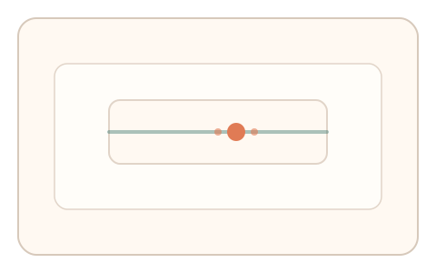
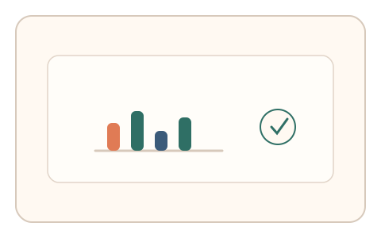

#108
Morphological Analysis - Combination Batches
已扩展
拥挤‑阈值联动
保持中心锚点并响应外围目标后，立即调节对比阈值，以干扰前后阈值变化验证真实性。
概念原文
用户保持中心锚点并响应外围目标后，立即调节对比阈值，系统比较干扰前后阈值变化。任务结构为双任务切换，信号形态为反应时与阈值调节。
利用外周拥挤对阈值的干扰效应。
研究背景
视觉拥挤会干扰外周识别并影响阈值判断，真实用户在干扰后的阈值调整呈现稳定变化。将外围任务与阈值调节结合可形成双信号。
核心机制
- 用户保持中心锚点并响应外围目标。
- 任务结束后立即进入对比阈值调节。
- 记录反应时与阈值变化幅度。
- 比较干扰前后阈值差异。
用户流程
- 步骤 1：用户保持中心锚点并响应外围目标。
- 步骤 2：进入对比阈值滑杆调节。
- 步骤 3：系统分析阈值变化并判定。
判定信号
反应时与错误分布
拥挤任务会引入稳定的反应时波动。
阈值变化幅度
干扰后的对比阈值调整具有可预测的偏移。
判定逻辑
阈值变化需落在人类分布区间且与反应时合理关联；无变化或过度一致判异常。
对抗面
- 脚本忽略干扰并固定阈值
- 重放真实用户的阈值调整
防御与缓解
- 随机化外围目标位置与密度
- 动态调整阈值范围与起点
- 叠加停顿与轨迹信号
可达性与风险
提供更大目标与慢速模式，必要时提供替代任务。
- 外周任务对视力弱用户不友好
- 设备显示差异影响对比阈值
可视化状态

状态 1：拥挤任务
中心锚点与外围目标同时存在。

状态 2：阈值调节
完成干扰后调节对比阈值。

状态 3：联动判定
比较反应时与阈值变化。
参考资料
Crowding
说明视觉拥挤效应与外周识别干扰。
Contrast (vision)
说明对比阈值与视觉敏感度。